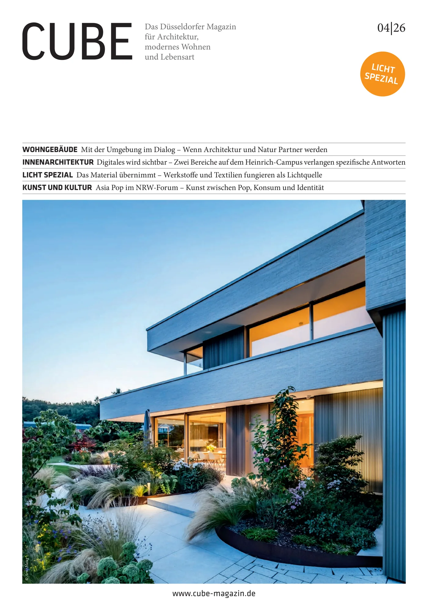
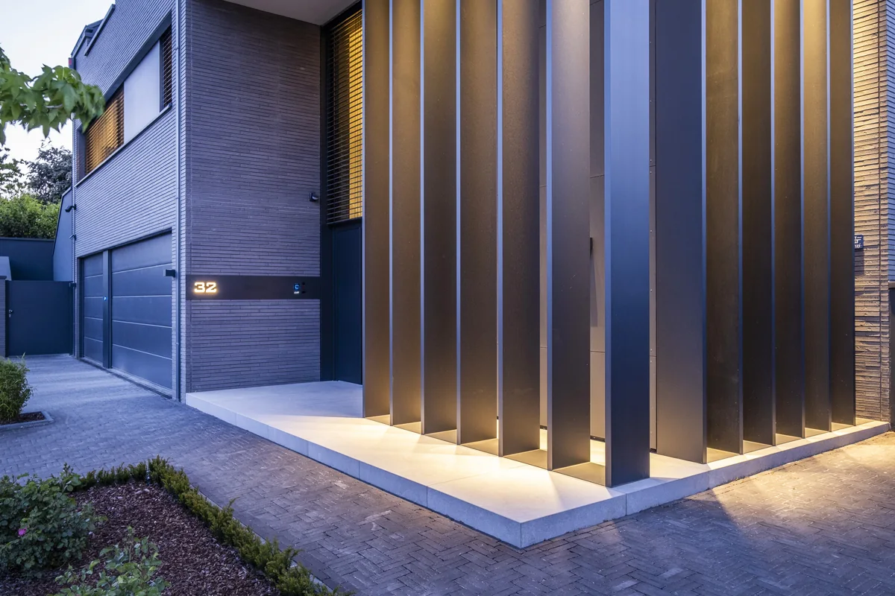

Neu · November 2026
Auf dem Titel.
Cube Magazin Düsseldorf 04|26, erschienen am 3. November 2026. Auf dem Titel: eines unserer Häuser. Im Heft der Bericht „Mit der Umgebung im Dialog“, Seite 6 bis 10.
Presse
Architekturmagazine, Jahrbücher, Kalender und Fernsehen. Jeder Eintrag führt zum Original: zum Bericht, zum Film oder zu den Seiten als Scan.

Neu · November 2026
Cube Magazin Düsseldorf 04|26, erschienen am 3. November 2026. Auf dem Titel: eines unserer Häuser. Im Heft der Bericht „Mit der Umgebung im Dialog“, Seite 6 bis 10.
Wiederentdeckt · stylus 02|2019
Acht Seiten über ein Privatwohnhaus in Vreden: versetzte Kuben, große Glasflächen, Blickachsen durch das ganze Haus. Erschienen in stylus, dem Metropolmagazin. Fotos von Arndt Haug.
Tippen Sie auf eine Seite, um den Bericht zu lesen.
2026
Derselbe Bericht wie in der Düsseldorfer Ausgabe: „Mit der Umgebung im Dialog“, Seite 4 bis 8.

2026
„Schönheit am Hang“: unser Lamellenhaus im Kreis Steinfurt, 1.100 m² Grundstück, 3,50 Meter Höhenunterschied.
2025
„Architektur mit klarer Linie“: Haus mit 337 m² für eine vierköpfige Familie.
2025
„Traumhaus mit Potenzial“: Ersatzneubau für eine sechsköpfige Patchwork-Familie auf rund 1.275 m².
2024
„Maßgeschneidertes Zuhause“: Entwurf für sich ändernde Lebensphasen.
2023
„Schwarze Schönheit“: Familienhaus in Schwarz und Weiß.
2023
„Firmensitz mit Wow-Effekt“: ein Firmensitz, generalüberholt zur Arbeitswelt im Loft-Stil.
2023
„Das Besondere herausstellen“: großzügiges Einfamilienhaus mit lebendiger Steinfassade.
2022
„Ein Familienidyll“: modernes, nachhaltiges und smartes Einfamilienhaus.
2021
„Perfekt ausbalanciert“: Haus einer vierköpfigen Familie auf schmalem Grundstück.
2021
„Design trifft Technik“: familienfreundliches Haus mit smarter Haustechnik.
2021
„Zuhause neu gedacht“: Interview mit Anja und Jochen Engelshove über Wohn- und Architekturtrends, Seite 46 bis 48.
2021
Zwölf Häuser aus aller Welt, nur eines aus Deutschland: unser Bauvorhaben aus dem Westmünsterland, Monat März.
2020
Beilage in HÄUSER und Schöner Wohnen: „Ein- und Ausblicke“, ein offener Lebensbereich in Rheine, Seite 30 bis 35.
2020
„Ein Hoch auf Ziegel“: Wohn-, Pool- und Gästehaus aus hellgrauem Wasserstrichziegel.
2018
„Cubistic residence“: unsere Villa in Oberhausen-Königshardt, Beilage zu Domus Nr. 1025, Juni 2018. 2020 von Cotto d’Este nachgedruckt, dort ab Seite 96.
2018
Ausgabe Münster und Osnabrück, elf Seiten.
2018
Französische Ausgabe: Interview mit unserem Büro und Bericht über ein Haus in Neuenkirchen.
2018
„Raum für Wohnen und Wellness“: Villa in Oberhausen-Königshardt.
2017
„Mit harter Schale“: unser Architektenhaus unter den massiven Effizienzhäusern.
2016
Französische Ausgabe: „Habitat multi-générations“, das Mehrgenerationenhaus der Familie Engelshove in Neuenkirchen.
2014
„Charakterstarkes Mehrgenerationenhaus“, Seite 72.
2013
Unter den zehn Favoriten der schönsten casamia-Häuser.
2013
„Konsequente Architektur“: unser eigenes Bürogebäude in Neuenkirchen.
2010
„Spiel der Struktur“: unser Bürogebäude an der Dieselstraße, Seite 12 bis 14.
Homestory „Haus in Neuenkirchen“ mit vier Fragen an das Ehepaar Engelshove.
2015
„Made for More“, gedreht in unserem Projekt Heideweg in Neuenkirchen.
Drei Objekte: das Landrefugium im Münsterland, ein Einfamilienhaus in Hasbergen und eine Villa in Dortmund.